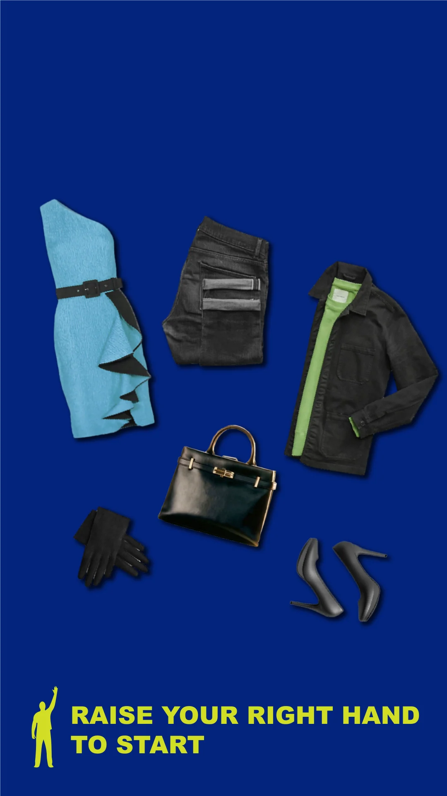

Clear raised-hand instruction
The 1080 by 1920 artboard shows a dress, folded trousers, jacket, bag, gloves and shoes above a raised-hand icon and start instruction.
Clothing choices introduced through a physical cue.
Explore the story
Explain how to begin a matching-game concept before presenting further gestures.
Garment and accessory cutouts fill the blue portrait screen above a raised-hand instruction. Companion artboards introduce directional swipes, readiness and countdown states.
The 1080 by 1920 artboard shows a dress, folded trousers, jacket, bag, gloves and shoes above a raised-hand icon and start instruction.
Native artboards 2 and 3 contain downward swipe instructions for the right and left hands; later artboards include ready/countdown and split-garment layouts.
The logo-off export removes 43 native vector header paths. Before/after pixel differences are confined to x=283..796, y=77..234; the raster garment art and all functional instructions are unchanged.
Explore the complete compositions and interface states. Select any image for a closer look.
Structure, interaction and visual decisions that give the work its character.
RoleContribution awaiting confirmation
AssetsPrivate evidence draft. Individual contribution and public use remain unverified. Source files do not establish personal authorship, original modeling or original illustration. Supplied, licensed, upstream and AI-assisted components require separate credit. Product imagery is supplied or upstream until confirmed. Retail installation and interface records are related scopes, not automatically separate commissions. Later branded product artboards are excluded.
StatusPrivate evidence draft; contribution and final delivery unverified